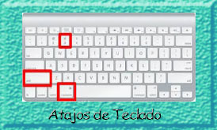

¡Aprovecha al máximo tu Mac!
Conoce tu macOS y/o Windows. Obtén provecho de tus Equipos de Cómputo. Ofrecemos Asesorías para el Sistema Mac o Windows. Otros Servicios que ofrecemos, son: mantenimiento Preventivo y Correctivo a Equipos iMac, Macbook Pro y Windows. Si tienes equipos de versiones anteriores, no los deseches, aprovéchalos y sácales más rendimiento.

-
Tenemos Soporte Preventivo y Correctivo a Equipos Portátiles actuales y de versiones anteriores; abarcando las versiones de los Sistemas Operativos: 10.9, 10.10, 10.11, 10.12, 10.13, 10.14, 10.15 y 11Soporte Técnico
-

Te asesoramos para que aprendas los famosos atajos (Shortcuts) de tu Sistema macOS. También conocerás otras herramientas de las Preferencias del Sistema.
Proyectos T.I. -
Nuevos procesadores Intel Core de 4 y 6 núcleos de octava generación. Hasta 32 GB de RAM para usar varias aplicaciones a la vez. Increíble pantalla de Retina con tecnología True Tone.
Diseño Gráfico en Mac